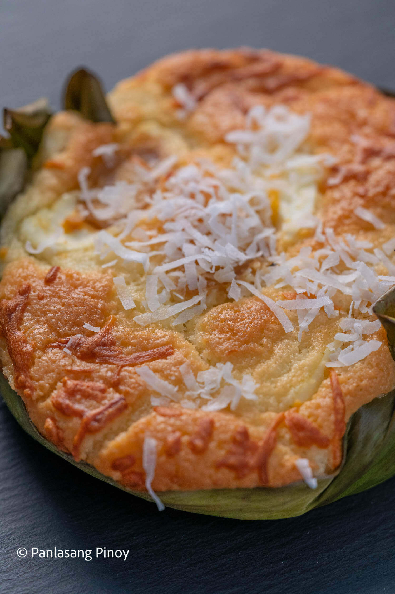
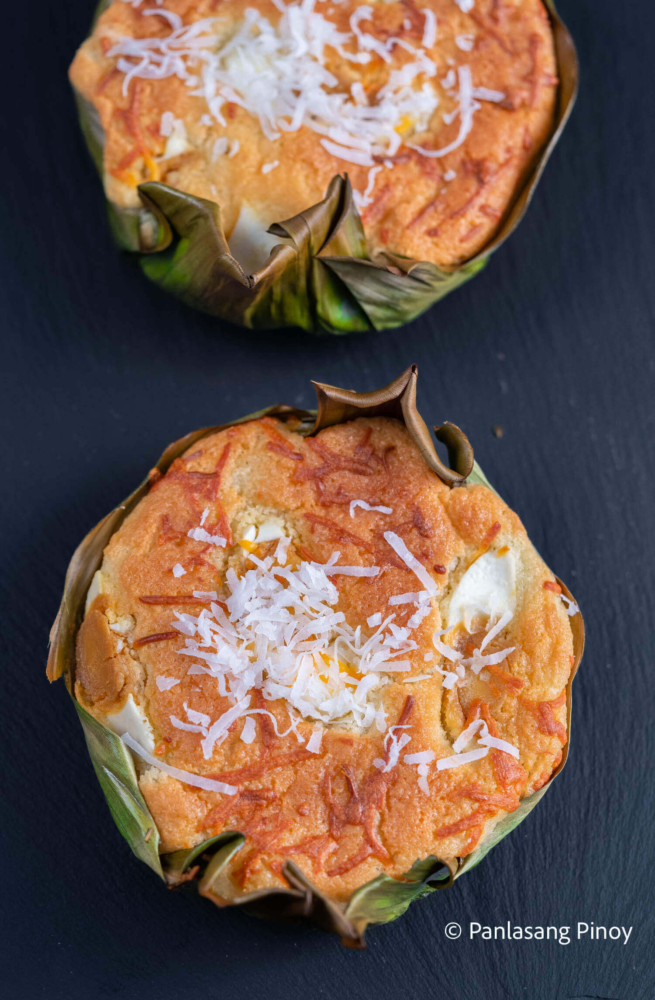

Bibingka
Bibingka Recipe
If there’s one thing Filipinos love as much as food, it’s Christmas. In fact, Filipinos love Christmas so much, our holiday season begins as early as September 1! And bibingka is the perfect example of a classic Filipino Christmas food. Like the famous Ben & Ben song of the same name says, we can find…
Bibingka is a type of rice cake native to the Philippines. It goes without saying that we Filipinos love rice. We have it with almost every meal, and dessert is no exception. This is why kakanin has become such a popular Filipino merienda. A combination of the words kanin (rice) and kain (eat), kakanin refers to a group of glutinous rice cakes Filipinos know and love.
THE BIBINGKA
Ingredients
- 1 cup rice flour
- 1/8 teaspoon salt
- 2 1/2 teaspoon baking powder
- 3 tablespoons butter
- 1/2 cup granulated sugar
- 1 cup coconut milk
- 1/4 cup fresh milk
- 1 piece salted duck egg sliced
- 1/2 cup grated cheese
- 3 pieces raw eggs
- 1/4 cup grated coconut
- Pre-cut banana leaf
Instructions
- Preheat oven to 375 degrees Fahrenheit.
- Combine rice flour, baking powder, and salt then mix well. Set aside.
- Cream butter then gradually put-in sugar while whisking.
- Add the eggs then whisk until every ingredient is well incorporated.
- Gradually add the rice flour, salt, and baking powder mixture then continue mixing.
- Pour-in coconut milk and fresh milk then whisk some more for 1 to 2 minutes.
- Arrange the pre-cut banana leaf on a cake pan or baking pan.
- Pour the mixture on the pan.
- Bake for 15 minutes.
- Remove from the oven then top with sliced salted egg and grated cheese (do not turn the oven off).
- Put back in the oven and bake for 15 to 20 minutes or until the color of the top turn medium brown.
- Remove from the oven and let cool.
- Brush with butter and top with grated coconut.
- Serve. Share and enjoy! 
Here are just some of my other recipes that put a twist on the popular treat:
If you're more of a biko or suman fan, perhaps this bibingkang malagkit recipe will be more to your liking. Personally, I think this recipe is more of a modified biko. Its sticky texture may be difficult to work with at first, but you'll end up with a delicious treat in the end.
Royal bibingka is a type of bibingka from the Ilocos region. This one tastes a little bit more like a mix between cassava cake and espasol. Still, its chewy texture and sweet taste pairs great with a hot cup of coffee or cocoa.
And if you want the original bibingka but in more bite-sized goodness? My bibingka muffin recipe gives you all the tastiness bibingka has to offer, but in cupcake sizes.